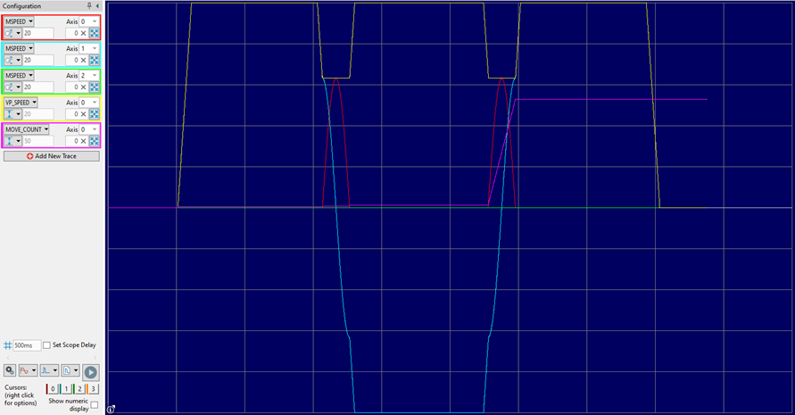

Axis Parameter
The corner mode is a function that allows the program to control the cornering action of advanced speed control moves (those suffixed “SP”).
Automatic corner speed control is any move type where the end angle of the previous move differs from the start angle of the next move (typically vectors), and allows the system to automatically reduce the speed based on DECEL_ANGLE and STOP_ANGLE .
Note that corner speed control operates by setting the next move’s STARTMOVE_SPEED, and so the AXIS_BLENDING must be set to a mode that interrogates STARTMOVE_SPEED and uses the lowest value at the move boundary (because corner control requires a reduction in speed). Consequently, corner control will not function if AXIS_BLENDING is set to 0 (off), 2 (previous) or 4 (high).
Automatic radius speed control is for moves that have a radius (like MOVECIRCSP, MHELICALSP and MSPHERICALSP) and allows the system to reduce the speed around a radius depending on its tightness. This can be achieved in two ways, either by factoring the speed by the ratio of the corner’s radius to the FULL_SP_RADIUS , or by limiting the centripetal acceleration (v 2 / r), and this can either cap the centripetal acceleration to that at FULL_SP_RADIUS or to ACCEL .
The ratio of radii method is for backward compatibility, as it does not accurately model the forces due to the severity of the radius, which the centripetal mode does.
Note that radius speed control operates by overriding each move’s FORCE_SPEED and so, unlike corner speed control, is not dependant on the setting of AXIS_BLENDING.
Automatic radius speed control can also be used with vectors, like MOVESP and MOVEABSSP, where the change in direction between two vectors is used to determine an effective radius that is used as per automatic radius speed control. The purpose of this is for the case of densely packed vectors that are almost inline, but which together describe a rapid change of direction, a case that conventional corner control using STOP_ANGLE and DECEL_ANGLE will not handle. This is intended to be used alongside conventional corner control.
You can enable any combination of the speed control bits, but bit 4 is only significant if bit 3 is set and bit 5 is only significant if bit 4 is set.
When bits 4 and 5 are set (centripetal mode with centripetal acceleration limited to ACCEL), the value of FULL_SP_RADIUS is not used and may be left at its default value of zero.
Note that corner control is processed when moves are loaded using current parameter values, and so are not subject to change.
The CORNER_STATE machine allows interaction with a TrioBASIC program and the loading of buffered moves depending on RAISE_ANGLE
32-bit value where each bit represents a different corner mode.
|
Bit |
Description |
Value |
|
|
0 |
Reserved |
1 |
|
|
1 |
Automatic corner speed control using DECEL_ANGLE and/or STOP_ANGLE |
2 |
|
|
2 |
Enable the CORNER_STATE machine |
4 |
|
|
3 |
Automatic radius speed control |
8 |
|
|
4 |
Centripetal mode |
0 = Speed control using a ratio of the move’s radius to FULL_SP_RADIUS 1 = Speed control using centripetal acceleration Ignored unless bit 3 is set |
16 |
|
5 |
Use ACCEL |
0 = Limit centripetal acceleration to that at FULL_SP_RADIUS 1 = Limit centripetal acceleration to not exceed ACCEL Ignored unless bits 3 and 4 are set |
32 |
|
6 |
Vector radius control |
0 = Speed control using vector radius disabled 1 = Speed control using the radius of curvature between two vectors Ignored unless bit 3 is set |
64 |
Enable the corner state machine and automatic corner speed control.
CORNER_MODE = 2 + 4
Do the same as example 1 but using the bit operator.
CORNER_MODE.1 = ON
CORNER_MODE.2 = ON
Enable corner radius speed control using a simple ratio of move radius to FULL_SP_RADIUS.
CORNER_MODE.3 = ON
CORNER_MODE.4 = OFF
Enable corner radius speed control by limiting the centripetal acceleration to be no greater than that at FULL_SP_RADIUS.
CORNER_MODE.3 = ON
CORNER_MODE.4 = ON
CORNER_MODE.5 = OFF
Enable corner radius speed control by limiting the centripetal acceleration to be no greater than ACCEL (FULL_SP_RADIUS is not used).
CORNER_MODE.3 = ON
CORNER_MODE.4 = ON
CORNER_MODE.5 = ON
The following program illustrates corner radius control when applied to a MOVECIRC and an equivalent vector sequence.
DEFCONST radius 4 'The radius of the semi-circle
DIM n, i AS INTEGER
DIM angle, x, y, x0, y0 AS FLOAT
CHANNEL_WRITE(9, "%[USER] SCOPE ARM")
WA(2000)
INITIALISE
FOR i = 0 TO 1
BASE(i)
ATYPE = 0
UNITS = 1000000
SPEED = 100
ACCEL = 1000
DECEL = 1000
JERK = 10000
SERVO = ON
STARTMOVE_SPEED = -1
ENDMOVE_SPEED = -1
AXIS_MODE.2 = 0 '0 = 2D mode; 1 = 3D mode
LIMIT_BUFFERED = BUFFERSIZE
MERGE = ON
DEFPOS(0)
NEXT i
BASE(0, 1)
CORNER_MODE.1 = 1 '1 = Automatic corner speed control enabled
CORNER_MODE.3 = 1 '1 = Automatic radius speed control enabled
CORNER_MODE.4 = 1 '0 = FULL_SP_RADIUS acceleration; 1 = Centripetal
acceleration
CORNER_MODE.5 = 1 '0 = Limit to FULL_SP_RADIUS; 1 = not exceed ACCEL
CORNER_MODE.6 = 1 '0 = Vector radius speed control off; 1 = on
n = BUFFERSIZE
FORCE_SPEED = SPEED
TRIGGER
WA(500)
'Vector up, semi-circle, vector down, semi-circle (composed of many small
vectors), vector up
MOVESP(0, 100)
MOVECIRCSP(2 * radius, 0, radius, 0, 1)
MOVESP(0, -100)
x0 = -radius
y0 = 0
FOR i = 1 TO n
angle = -PI * (n - i) / n
x = radius * COS(angle)
y = radius * SIN(angle)
MOVESP(x - x0, y - y0)
x0 = x
y0 = y
NEXT i
MOVESP(0, 100)
WAIT IDLE
WA(500)
CHANNEL_WRITE(9, "%[USER] SCOPE DISARM")
The oscilloscope trace produced by the above program is shown below and illustrates how the speed slows down in the same manner in both cases:

ACCEL , AXIS_BLENDING , CORNER_STATE , DECEL_ANGLE , FULL_SP_RADIUS , RAISE_ANGLE , STOP_ANGLE